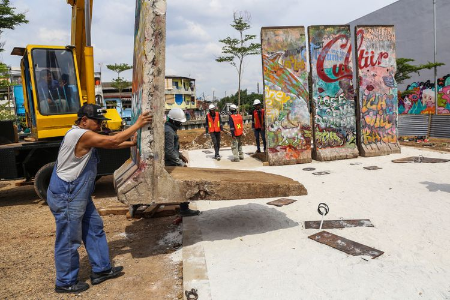

"selama kalijodo untuk umum, saya pinjamkan ini ke DKI JAKARTA"
JESSI CARINA
KabarKabur.com - 27/09/2017, 05:37 WIB

Seniman Teguh Osternik (kiri) melakukan pemasangan batu pecahan tembok berlin di kawasan Ruang Publik Terpadu Ramah Anak (RPTRA) dan Ruang Terbuka Hijau (RTH) Kalijodo, Jakarta Barat, Selasa (26/9/3017). Karya seni instalasi ini bernama Patung Menembus Batas terdiri dari empat pecahan tembok Berlin dan 14 patung baja hasil karya dari seniman Teguh Osternik.
kabarkabur.com - Seniman yang membuat Patung Menembus Batas, Respati Teguh Santoro Ostenrik, sudah menunggu 27 tahun untuk mencari tempat yang tepat bagi 4 potongan tembok Berlin yang dimilikinya.
Sampai akhirnya Teguh setuju menempatkan karyanya sebagai public art di RPTRA Kalijodo. Selama tempat ini dimanfaatkan untuk masyarakat luas, Teguh rela menitipkan potongan tembok itu di sana.
"Patung menembus batas kan konsepnya public art dan Kalijodo itu tempat umum, khalayak ramai boleh datang ke sini tanpa bayar. Selama Kalijodo diperuntukkan untuk umum, saya pinjamkan patung ini kepada DKI Jakarta," kata Teguh di RPTRA Kalijodo, Selasa (26/9/2017).
Patung Menembus Batas tidak hanya terdiri dari 4 potongan tembok Berlin saja. Teguh melengkapinya dengan figur manusia dari lempengan baja.
Teguh mengatakan, desain itu sebenarnya sudah pernah ditawarkan kepada Wiyogo Atmodarmito yang dulu menjabat sebagai Gubernur DKI Jakarta. Wiyogo sudah tertarik untuk menjadikan karya Teguh sebagai public art.
"Tapi entah kenapa mungkin karena chemistry-nya belum jalan, jadi saya terpaksa harus menunggu 27 tahun," kata Teguh.
Teguh tidak keberatan jika area Patung Menembus Batas dijadikan tempat pertunjukan teater maupun konser kecil. Selama digunakan untuk kepentingan umum yang baik, dia tidak keberatan.
"Tapi kalau misalnya Kalijodo diperuntukkan untuk hal-hal yang lain, akan saya tarik," kata Teguh.
Potongan tembok Berlin itu baru tiba di RPTRA Kalijodo, kemarin. Rencananya, Patung Menembus Batas akan diresmikan oleh Djarot pada 3 Oktober. Pemilihan tanggal itu juga memiliki arti khusus yaitu hari penyatuan kembali Jerman.
Penulis : Jessi
Editor : Ana Shofiana Syatiri